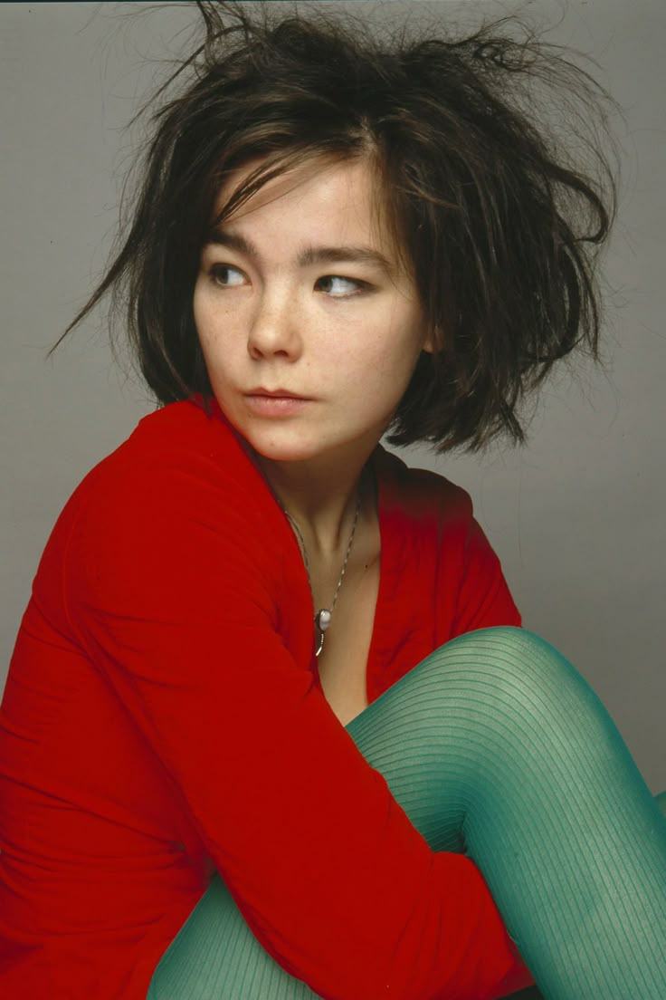
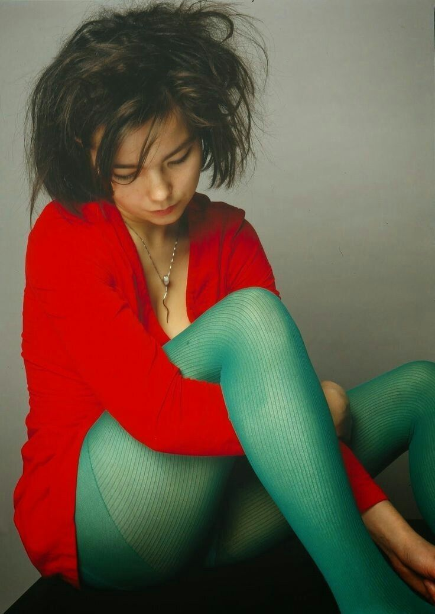
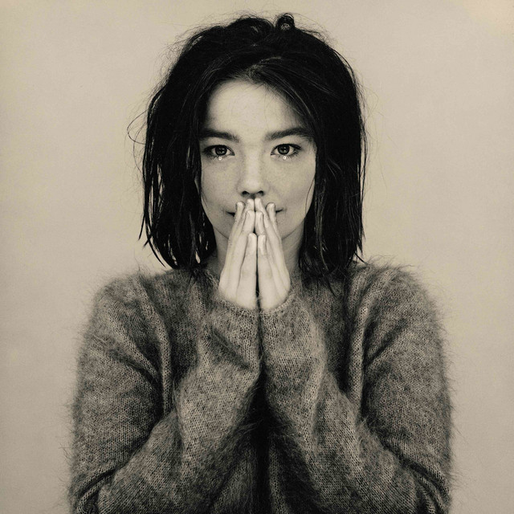
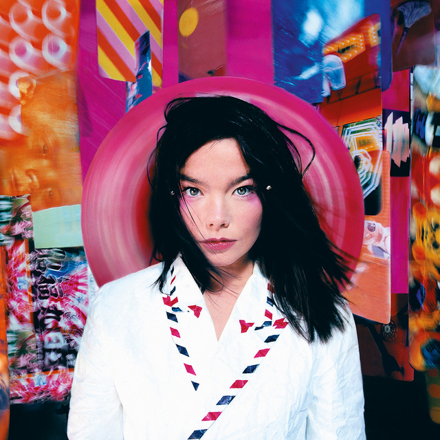
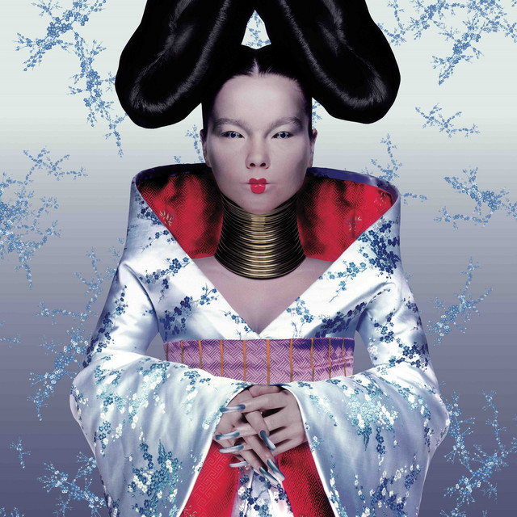
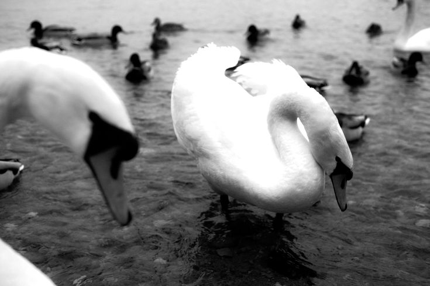

Björk es una cantante y actriz islandesa con una trayectoria extraña pero muy interesante.
Ha desarrollado un estilo ecléctico a lo largo de más de cuatro décadas de carrera,
fusionando géneros como la música electrónica, el pop, la música dance y el trip hop.
Álbumes como Homogenic de 1997 revolucionaron la música para siempre.
Además, la carrera de Björk ha influenciado a una alta gama de artistas como:
Madonna, Lady Gaga, Arca, Rosalía, FKA twigs, Addison Rae y más.
Actualmente es considerada una de las mejores artistas de todos los tiempos.

Este fue el primer álbum de Björk. Su ambiente sonoro está compuesto principalmente de house, art pop, trip hop y jazz. Cuenta con canciones como "Venus As A Boy" y "Big Time Sensuality".

Post continúa con la exploración sónica de Debut pero expande el alcance de esta, optando por sonidos más experimentales y dejando de lado el house por un sonido más industrial. Fue universalmente aclamado en su momento y cuenta con canciones como "Army Of Me" y "Hyper-ballad".

Homogenic surgió a partir del atentado en contra de la vida de Björk por parte de un acosador que mandó una bomba a su residencia en Londres. El álbum implementa sonidos nativos de Islandia (país en el que nació Björk), además de sonidos españoles y electrónicos. Cuenta con canciones como "Jóga" y "Bachelorette". Además, compite con Vespertine por el puesto del álbum más aclamado de la cantante islandesa.

Este álbum trata sobre el amor entre Björk y su esposo de aquel momento, Matthew Barney. Su ambiente sónico toma la folktronica, el ambient y el art pop como sus principales pilares. Cuenta con canciones como "Pagan Poetry" y "Hidden Place".